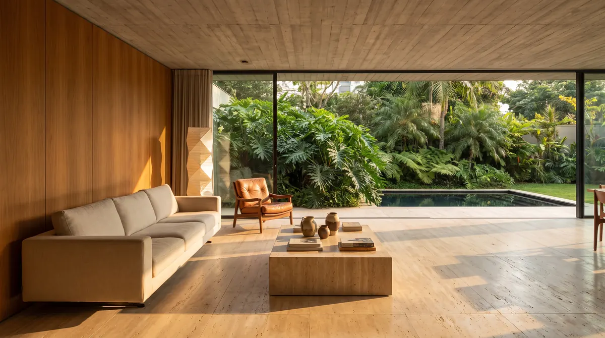
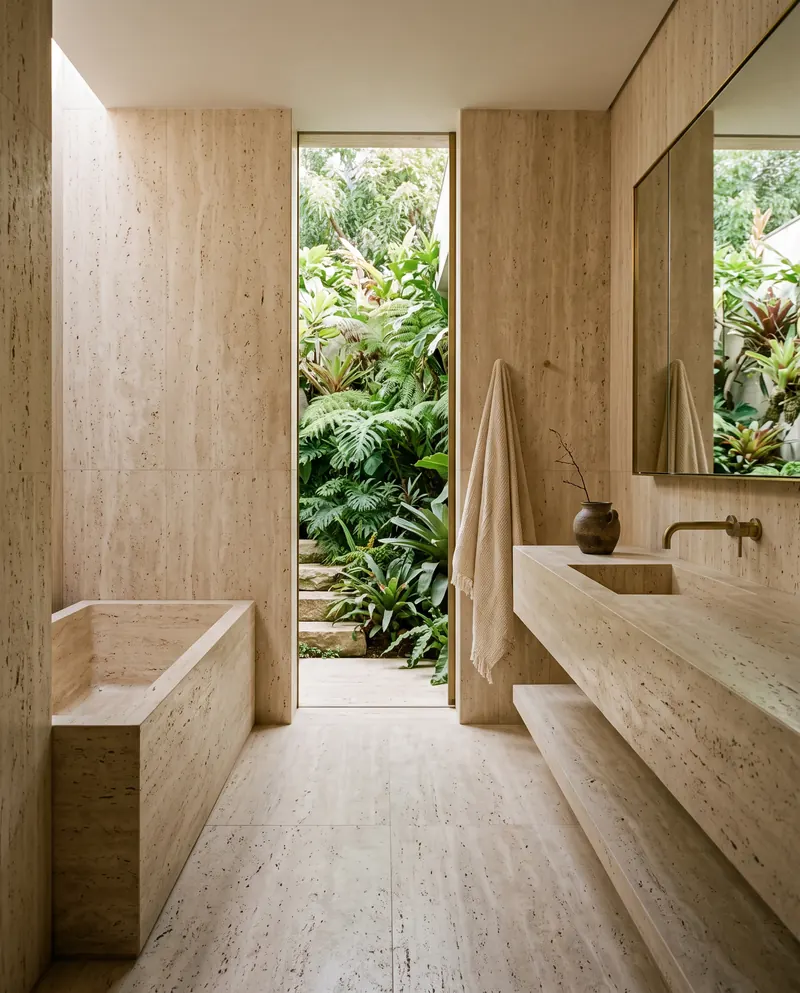
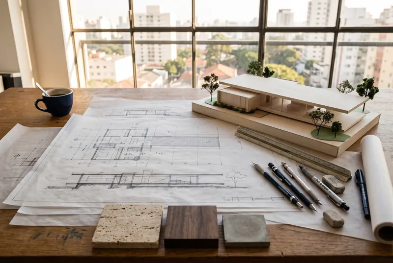
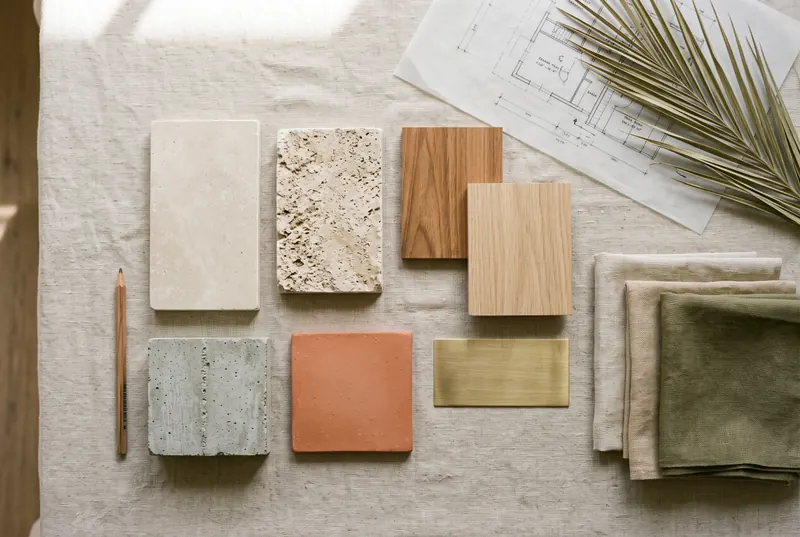

Casa Cidade Jardim
- Local
- São Paulo, SP
- Area
- 720 m²
- Year
- 2024
- Scope
- Architecture and interiors
A concrete volume suspended over the garden, with cumaru louvers that filter the afternoon sun.
Architecture and interiors studioJardim Europa, São Paulodesde 2009
High-end homes, apartments and interiors, from the first sketch to the last piece in place.
Casa Jardim Europa Living room620 m² 2024
01Manifesto

Casa Jardim Europa Living room620 m² 2024
We're a small studio by choice. We take on few projects a year so that every house gets the partner's attention from the first line to the handing over of the keys.
We design from the site, the light and the routine of those who will live there — never from trends. Concrete, wood, stone and linen: honest materials that get more beautiful with time.
02Projects
A selection of projects delivered in recent years. Drag sideways — or keep scrolling.
05
obras selecionadas
A concrete volume suspended over the garden, with cumaru louvers that filter the afternoon sun.

A freijó veranda open to the sea and the forest; the whole house opens up on hot days.

An open plan, custom joinery and the treetops as the view.

A floating solid-wood staircase against exposed concrete, under the skylight.

A travertine bathroom open to an inner garden, like a small clearing.
On request, for those starting a project with the studio.
Project 01 of 05
03From sketch to space
The first study for the living room of Casa Jardim Europa — the same one that opens this page — and the room delivered two years later. Drag to compare.


04Materials
We put together each house's palette on the table, with real samples, and only then design the details. Hover — or tap — to see each material in use.

05Process
From the first coffee to the finished house, Cecília follows every decision. Reference timelines — each project gets its own.

A long conversation, at your home or at the studio, about routine, habits and wishes. We visit the plot or property and survey what's there.
Hand sketches, a physical model and the first decisions on siting, light and circulation.
Plans, sections and a 3D model. The materials palette is put together on the table, with real samples.
Complete detailing of joinery, lighting, fixtures and stone, coordinated with the engineering.
Weekly visits, checking every detail and talking directly with the builder and suppliers.
Furniture, art and linens in place. You arrive and the house is ready to live in.
Reference timelines for a new house; each project's schedule comes in the proposal.


06Studio
I only start drawing a house once I understand how the family wakes up.
A FAU-USP graduate who worked at practices in Lisbon and São Paulo, Cecília founded the studio in 2009 with a simple idea: design fewer houses, and better.
Today she leads a team of nine architects and designers in a house-studio in Jardim Europa, where every client is welcomed with the materials table already laid out.
Cecília Moura
07Questions
Didn't find yours?
Ask on WhatsAppYes. We design houses on the north coast, in the São Paulo countryside and in other capitals. Site and construction visits are part of the schedule from the start.
We do. About a third of our projects are interiors or apartment renovations, with the same attention to detail as a new house.
By scope, area and complexity. After the first conversation, we send a detailed proposal with stages, deliverables and schedule.
A new house usually takes five to seven months of design before construction; interiors, three to five. The timeline for each case is set in the proposal.
Yes. We make weekly visits, check every detail and talk directly with the builder and suppliers until handover.
No. We can help assess plots or properties before you buy, looking at sun exposure, neighborhood and design potential.
08Briefing
Answer what you know — it takes two minutes. The brief goes straight to the studio's WhatsApp and Cecília replies personally.